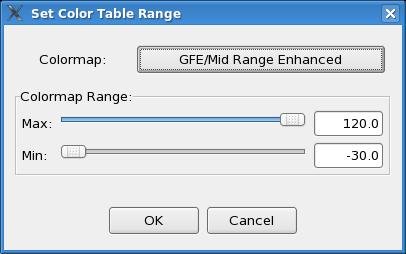
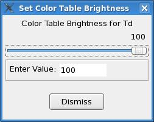

Color Bar Dialogs
The following dialogs are invoked directly or indirectly from the Button
Bar:
The SetColorTableRange Dialog and the
Color Table Brightness Dialog
are invoked via a MB3 pop-up menu from the Color Bar.
Set Color Table Range Dialog
The Set Color Table Range Dialog is accessed from the MB3 pop-up menu on
the color bar. Selecting Select Range... displays a dialog that allows
you to set the range of the current color table. To set a new
range, move one or both of the horizontal slider widgets to define your
new range and click OK. The same set of colors will now be defined
over this new range, thus modifying the color table temporarily.
Note that each weather element saves the state of the current color
table. If you modify a color table, it will remain in that state
until explicitly changed or until the parm is unloaded from the GFE.
In the latter case, the default color table will be used the next time
that weather element is loaded. Currently, you are not allowed to
preserve color table changes of this type.

Color Table Brightness Dialog
The Color Table Brightness Dialog is accessed from the MB3 pop-up menu
on the color bar, the "Change Color Table To..." entry on the Spatial
Editor Legends, and the pop-up menu on the Pickup
Value Dialog.
The color table brightness may be varied in 10% steps from 0 to 100%.
By default, the brightness is set to 100% upon selection of a new color
table.

Back To Top